Results¶
Everything below is produced by code in this repository, and every figure names the data file it was rendered from. The sections are ordered by how strong the comparison is, and each one says which kind it is — because “agrees with an exact solution”, “agrees with a published number” and “shows the expected behaviour at this size” are different claims and should not be read as one.
Lossless below means the bond dimension χ was at or above the full Hilbert-space bound, so the result carries no truncation error and an agreement figure measures the method rather than the cutoff.
Against exact answers¶
The Hubbard chain against the Lieb–Wu integral equations. The 1D Fermi-Hubbard model is exactly solvable, so its bulk energy per site is known analytically rather than from another numerical calculation. The engine’s bulk energy per site is taken as the incremental difference (E₆₄ − E₄₈)/16 between its two longest open chains — a finite difference, not an extrapolation:
U/t |
engine, (E₆₄ − E₄₈)/16 |
Lieb–Wu exact |
difference |
|---|---|---|---|
2 |
−0.84429042 |
−0.84437434 |
8.4e-5 |
4 |
−0.57368361 |
−0.57372937 |
4.6e-5 |
8 |
−0.32750449 |
−0.32753053 |
2.6e-5 |

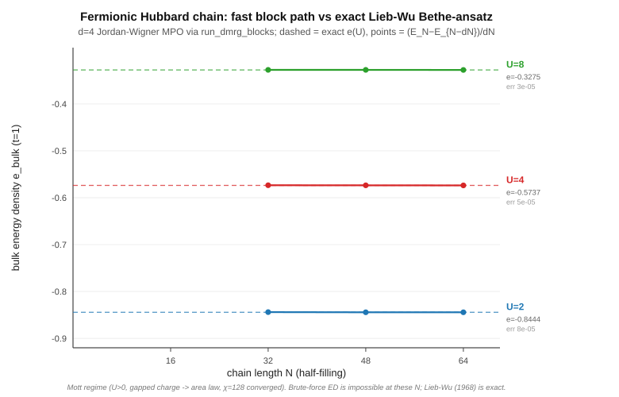
Data: docs/hubbard_lieb_wu.csv. The residual is mainly finite-size error that the
difference does not cancel: the spin excitations are gapless at every U, so the energy of
an open chain carries a 1/N term, and that term shrinks as U grows because the spin
velocity does. Fitting it out of the three longest chains removes most of the residual.
Ground states against independent exact diagonalisation. For the XXZ, J1-J2, spin-1
Heisenberg and Fermi-Hubbard chains, the Python API’s ground states are checked against an
exact diagonalisation written independently of the engine, to 1e-10, in CI
(python/quantx_engine/tests/test_models_ed.py). On an open chain the fermion signs are
a pure gauge, so that gate cannot catch a consistent sign slip. Ladders and cylinders,
where the signs are physical, are checked in the nightly C++ suite (qx_hubbard_test)
against an explicit Jordan–Wigner diagonalisation: their Hamiltonians to 1e-12, and a
half-filled cylinder’s DMRG ground state to 1e-6.
Fermionic VQE circuits against a dense state vector. Hamiltonian Variational Ansatz circuits are simulated exactly: every layer conserves particle number and spin, so the U(1)×U(1) block structure is an advantage for circuits rather than a restriction. Energy and entanglement entropies agree with an independent state-vector simulator to 1e-10 at the sizes below, where χ is at the full Hilbert-space bound — the bound the README states and CI enforces. The measured residuals are smaller and are tabulated with the width scan in the documentation; they are not repeated here, so they cannot drift.
What width costs a fermionic VQE. Chain, ladder and cylinder at the same 12 qubits, the same site-split representation, the same balanced cut and the same search protocol — only the connectivity graph changes. At depth 8 the correlation energy captured falls 98.5 % → 95.7 % → 90.7 % as the lattice widens, and that ordering holds at every depth from 2 to 8. The wider lattices get more parameters per layer (4 against the chain’s 3), so a worse energy with more freedom is the stronger form of the result.

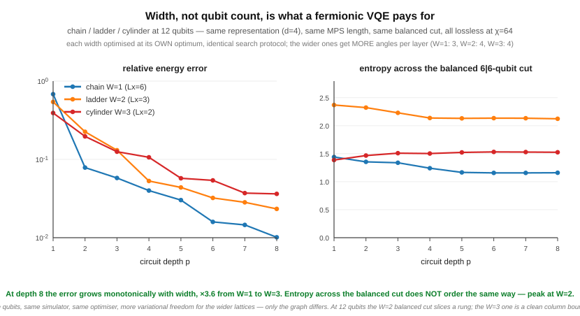
Data: docs/vqe_width.csv. The entropy half of this comparison does not order by
width, and the figure’s own caption says so, because it is generated from the data. At 12
qubits a cut that splits the qubits evenly slices through a ladder rung but falls on a
clean column boundary for the cylinder, so the two are not the same kind of cut. That is a
limitation of the size, not of the measurement.
Trainability against width. The same three geometries, now measuring the variance of a cost gradient over random parameter draws. The cylinder’s landscape is flatter than the chain’s by a depth-independent factor: ×0.30–0.35 on the dimensionless cost and ×0.15–0.18 on the raw gradient, at every depth, with a measured 2σ of ±0.05–0.06. The differentiated generator holds three bonds at every width and a colouring group is a matching, so the comparison is not a normalisation artefact.

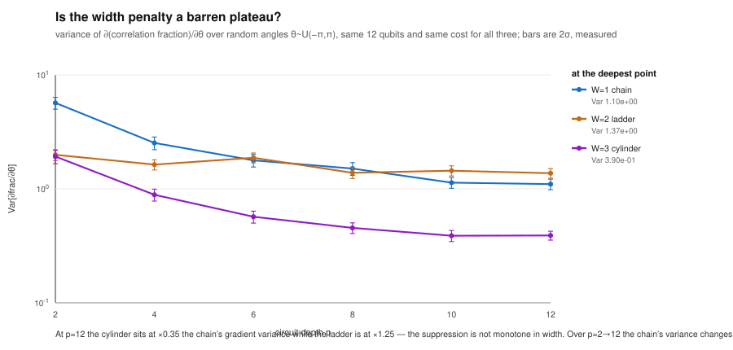
Data: docs/vqe_barren.csv, docs/vqe_barren_size.csv. The instrument is calibrated
before it is used: Richardson extrapolation puts the finite-difference noise floor at
1.7e-9 and every point in this figure sits at least 5.4e8 × above it, which is why the floor is
drawn on the same axes. This figure does not show a barren plateau — that term means
exponential decay in system size, and the accompanying size scan cannot establish one in
either direction. The documentation says why at length.
Against published values¶
These are comparisons against numbers from the literature, which are themselves numerical rather than analytic. That is a weaker kind of check than the section above and is labelled separately for that reason.
The spin-1 Heisenberg chain and the Haldane phase. The gapped Haldane ground state is the standard hard case for a spin chain. By N = 96 the engine reproduces the energy density −1.401484039 J per site — the accepted DMRG value, White and Huse (1993) — to about 2e-8. On a 40-site chain the string order parameter levels off at about 0.37 instead of decaying to zero. That hidden order is what separates the Haldane phase from a trivial gapped one, where it vanishes.

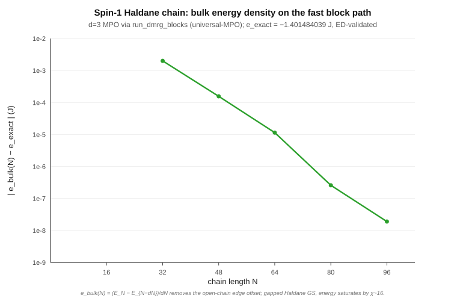

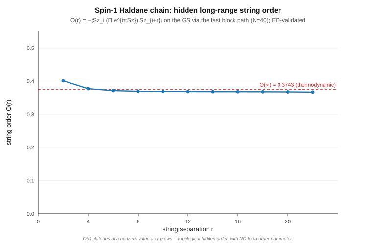
Data: docs/spin1_haldane.csv, docs/spin1_string_order.csv. Energies here are in
the S·S convention; the J1-J2 figures below use the Pauli convention, where each term is
XX + YY + ZZ and the numbers are four times larger.
Convergence and truncation¶
What a low-χ calculation misses, across the J1-J2 chain. At J2 = J1/2 — the Majumdar-Ghosh point — the exact ground state is a product of nearest-neighbour dimers, so it has bond dimension 2 and χ = 8 represents it exactly; its energy is −1.5 per site (Pauli convention). The scan samples the two points straddling it, J2 = 0.49 and 0.51, whose energies are −1.50021 — a different J2, not a discrepancy. Away from that point the frustrated state is genuinely entangled and χ = 8 under-converges. The figure plots that difference, E(χ = 8) − E(χ = 128) per site:
J2/J1 |
0 |
0.45 |
0.49 |
0.51 |
0.55 |
|---|---|---|---|---|---|
energy χ = 8 misses, per site |
2.5e-4 |
7.6e-6 |
1.9e-7 |
2.2e-7 |
8.2e-6 |

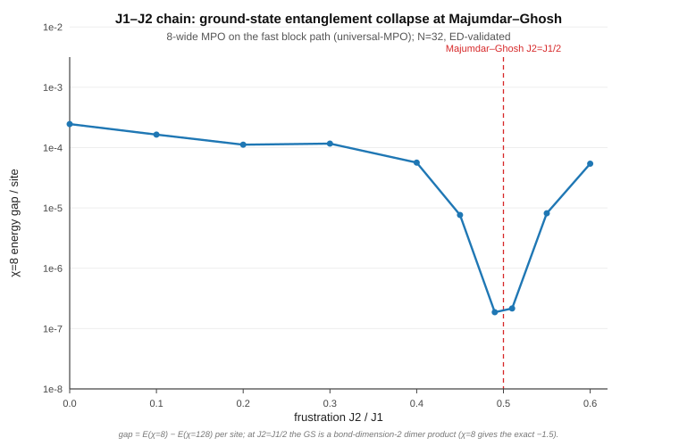
Data: docs/j1j2_dimerization.csv. The collapse is ×1313 from J2 = 0 to the
points straddling Majumdar-Ghosh. This is a truncation-sensitivity curve, not an order
parameter: it measures how much entanglement the state carries, which is why its two
smallest samples, at J2 = 0.49 and 0.51, straddle the point where the ground state becomes
a bond-dimension-2 product. That point itself is not sampled.
Demonstrations¶
These run the engine on problems where no exact answer or published number is quoted here. They show expected physics at a stated size and χ; they are not validations.
Spin-charge separation in the Hubbard chain, at T = 0. One electron, two separated collective excitations: the spin panel is gapless at k = π (the spinon continuum), while the charge panel opens the Mott gap and pushes the holon continuum up.

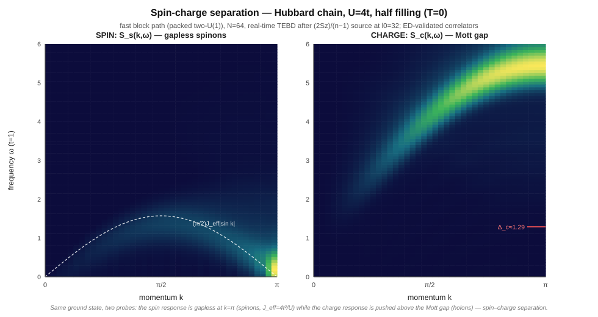
Data: docs/hubbard_spin_correlator.csv, docs/hubbard_charge_correlator.csv.
The dynamical spin structure factor at finite temperature. Purification carries the engine to finite T, where it computes dynamical response rather than static energies. S(k, ω, T) for the Hubbard chain at β = 2, from a 16-site purified chain:

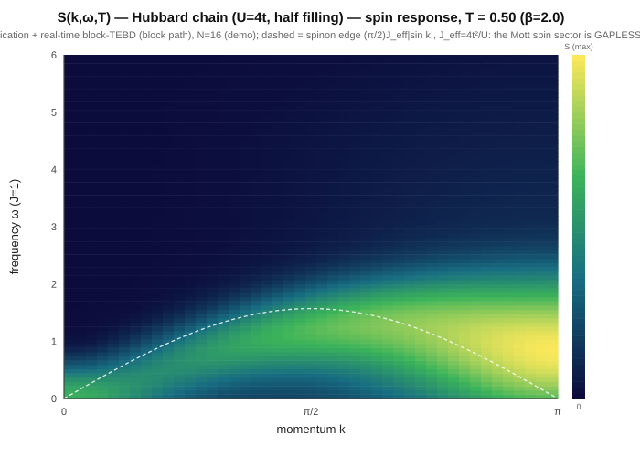
Data: docs/skw_hubbard_b2.0.csv.
The current spectrum at finite temperature. The same purification, applied to the
charge current: ⟨J(t)J(0)⟩_β of the half-filled Hubbard chain (16 sites, U = 4, χ = 1024),
Fourier-transformed into the current spectral function S_J(ω, T). That is the raw
transform, not the optical conductivity: Re σ(ω, T) = (1 − e^(−βω))/(2Lω) · S_J(ω, T),
and because that Kubo factor depends on ω it moves weight between frequencies. The
figure does not apply it (conductivity() on the same correlation object does), so
nothing below is a statement about transport. As the chain cools through T = 2, 1 and
0.5, the share of the spectrum’s weight below the Mott gap (1.287 at U = 4, from Lieb–Wu)
falls 24 % → 14 % → 7 %, as the thermally excited carriers behind the in-gap current
fluctuations freeze out. At T = 1 and 0.5 the spectrum peaks at ω ≈ 3.4 and 3.2, in the
upper Hubbard band; at T = 2 its largest peak is the thermal one at ω ≈ 0.25.

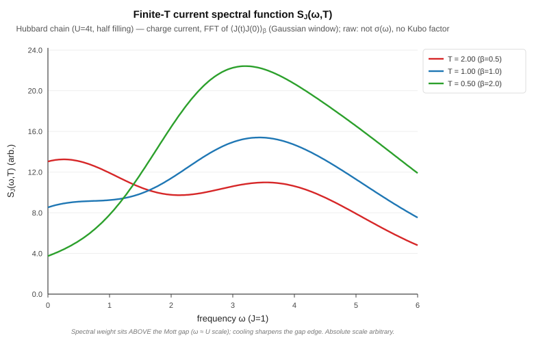
Data: docs/cond_hubbard_correlator.csv, written by
benchmarks/hubbard_finite_t_conductivity.py; benchmarks/plot_conductivity.py draws
the figure and prints the numbers above.
A demonstration with a gated method. The function that computed it,
quantx_engine.thermal.current_correlation, is checked in CI against full exact
diagonalisation of a 4-site Hubbard chain (python/quantx_engine/tests/test_thermal_ed.py).
This 16-site run has no exact answer of its own, and it is converged in χ only to
t ≈ 1.2–1.5: beyond that, χ = 512 and 1024 disagree. The numbers above barely move between
the two because the plot’s Gaussian window suppresses late times, so that stability
belongs to the window, not to the correlator.
Stripe order in the doped Hubbard model. On a 16×4 cylinder at U = 8 and 1/8 hole doping, the engine finds hole-rich rings around the cylinder about every 4 sites, and the antiferromagnetic order changes sign across each one — the π phase shift that is the signature of stripe order. This demonstrates the machinery (a doped charge sector, edge pinning, per-site profiles, 64 sites at χ = 1024); it does not settle the wavelength. At this doping the favoured stripes are reported to be filled, twice as far apart, with competing wavelengths a few kelvin apart in energy (Zheng et al., Science 358, 1155 (2017)). The half-filled pattern here is one of those close competitors, and separating them takes a far larger χ.

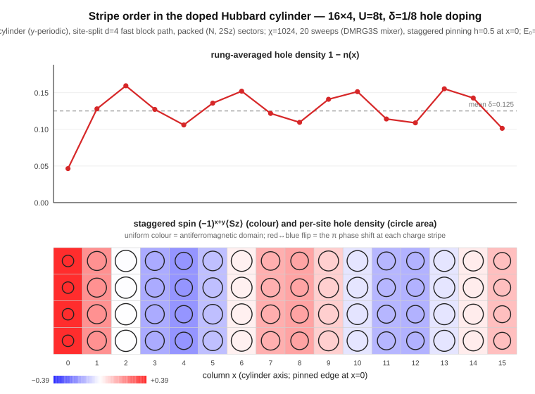
Data: benchmarks/stripes_16x4_chi1024.log, the run’s own output, from which
benchmarks/plot_stripes.py writes docs/hubbard_stripes.csv and draws the figure.
Performance¶
The honest comparison is against a mature library on the same problem, not against the engine’s own CPU path. Against single-threaded TeNPy with MKL, on TEBD at N = 32, min-of-2 runs:
χ |
256 |
512 |
1024 |
|---|---|---|---|
QuantX (CUDA + OpenBLAS) vs TeNPy (MKL) |
0.91× |
1.12× |
2.17× (2.74× with FP32) |

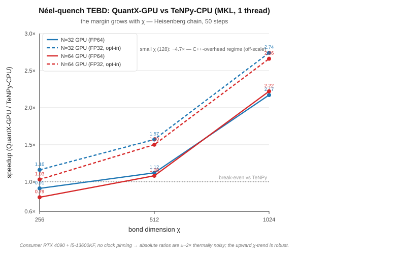
Data: the values are hard-coded in benchmarks/plot_margin_vs_chi.py from the
measurements in docs/gpu_acceleration_report.md; there is no CSV for this figure.
From χ = 256 to 1024 the margin grows with χ because that is where the SVD dominates: the bare GPU SVD kernel is 45× the CPU one at χ = 1024. At χ = 256 the engine in FP64 is slower than TeNPy (0.91×; 0.79× at N = 64), and that is reported rather than omitted. At χ = 128 it is about 4.7× faster at N = 32 (measured in a separate session), but that is compiled code beating TeNPy’s Python overhead rather than the GPU, which is why the figure notes it off-scale. At N = 64, χ = 1024 the figure is 2.22× (2.66× FP32), consistent with the N = 32 measurement. Timings on this machine are thermally noisy; the χ = 256–1024 numbers are minima over two runs.
The CUDA path requires a source build. The published wheels are CPU-only, so
pip install quantx-engine does not give you these numbers.
How these numbers are kept honest¶
Three review rounds on one pull request each found a figure in the prose that no longer matched the data it came from — stale after a re-run, or mistyped. Remembering to check did not work, so it is enforced instead:
benchmarks/check_vqe_doc.pyderives every quoted VQE figure from the committed CSVs and asserts the rendered string appears in the documentation. It runs in CI asqx_vqe_doc_figures.It also asserts the shape of the data, not only the digits — that an ordering holds at every depth, that a decay rate is not constant, that a committed data row could have been produced by the documented command. When a re-run overturns a conclusion, the check demands the prose be rewritten rather than the numbers retuned.
Figure captions are generated from the data files, so a figure states what its numbers support even where that contradicts the surrounding text. The width figure does exactly that.
The intended failure mode is a loud one: a claim that drifts from its data should break a test, not survive into a release.